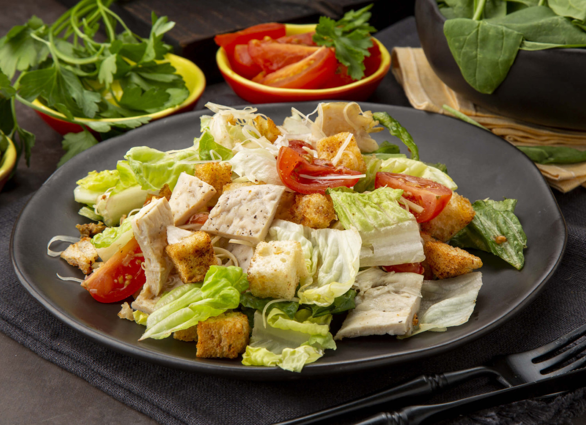

Салат цезарь
Рецепт:
- Куриное филе - 150 г
- Помидор - 1 шт
- Яйцо - 2 шт
- Хлеб белый - 2 ломтика
- Листья салата - 4-5 шт
- Оливовкое масло - 2 ст. л.
- Лимонный сок - 1 ст. л.
- Горчица - по вкусу
Приготовление
- Подготовьте все необходимые ингредиенты. Яйца отварите вкрутую. Куриное филе порежьте на небольшие по размеру пластины толщиной 5-6 мм. и обжарьте в небольшом количестве растительного масла до золотистой корочки. Идеально, если вы будете жарить их на гриле.
- Хлеб порежьте на небольшие кубики и подсушите в духовке или микроволновке. Помидор очистите и порежьте нетолстыми дольками.
- Соберите салат. На дно тарелки положите промытые листья салата, сверху положите помидоры, сухарики, порезанные дольками яйца и кусочки курицы.
- Подготовьте заправку: смешайте в небольшой креманке свежевыжатый лимонный сок, горчицу и немного оливкового масла. Полейте готовой смесью салат. Они хоть и не входят в классический вариант салата «Цезарь», очень хорошо сочетаются с овощами и придают салату пикантность. Подавайте салат в качестве закуски перед основным блюдом или в качестве главного блюда.